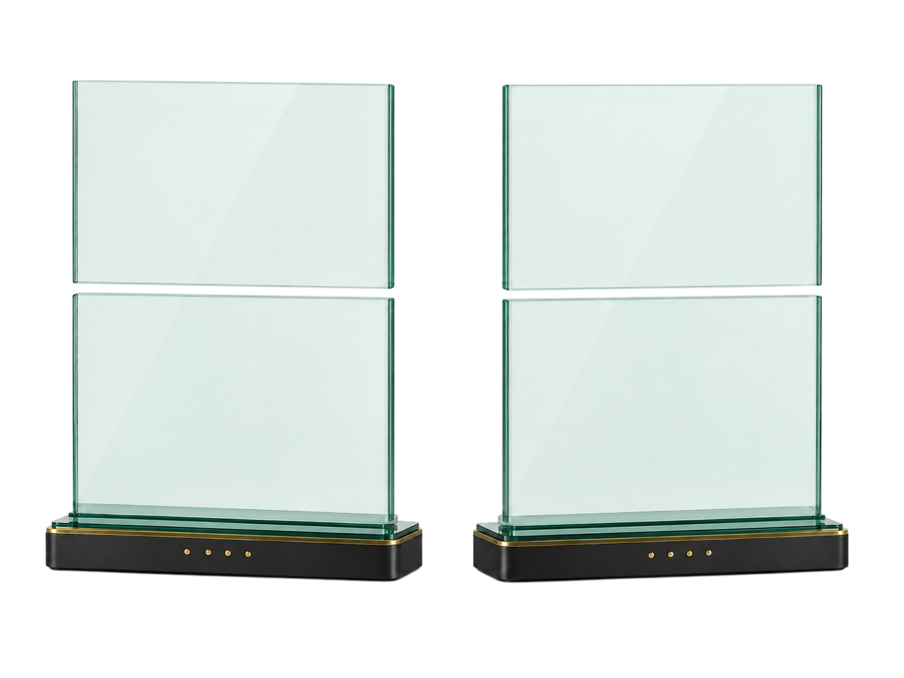

Belastbare Grundlage
Fachlich sinnvolle Anwendungsfälle werden von Ideen ohne ausreichenden Nutzen getrennt.
bevor Zeit und Budget gebunden werden
Die KI-Potenzialanalyse untersucht, wo künstliche Intelligenz und Automatisierung in Ihrem Unternehmen einen konkreten betrieblichen Nutzen erzeugen können.
Analysiert werden Prozesse, wiederkehrende Aufgaben, Datenflüsse, Dokumente und bestehende Systeme. Das Ergebnis ist eine strukturierte Einschätzung geeigneter Anwendungsfelder, notwendiger Voraussetzungen und sinnvoller nächster Schritte.
Eine KI-Potenzialanalyse bewertet betriebliche Abläufe daraufhin, ob und wie sie durch künstliche Intelligenz, Automatisierung oder datenbasierte Systeme unterstützt werden können.
Im Mittelpunkt steht nicht die Auswahl eines bestimmten Werkzeugs. Entscheidend ist, ob ein konkreter Prozess fachlich geeignet ist, ausreichende Daten zur Verfügung stehen und eine technische Umsetzung einen nachvollziehbaren Nutzen bietet. Untersucht werden unter anderem manuelle Bearbeitungsschritte, Medienbrüche, wiederkehrende Prüfungen, Informationssuche, Dokumentenverarbeitung und systemübergreifende Datenübertragungen.
Viele KI-Projekte beginnen mit einer Technologie, bevor der eigentliche Anwendungsfall eindeutig definiert wurde. Dadurch entstehen häufig Einzellösungen, die schlecht in bestehende Abläufe integriert sind oder keinen messbaren Vorteil bieten. Die Potenzialanalyse setzt davor an: Sie schafft Klarheit über sinnvolle Anwendungen, vermeidet ungeeignete Investitionen und erkennt technische wie organisatorische Voraussetzungen frühzeitig.
Geprüft werden Prozesse und Aufgaben, also wiederkehrende Tätigkeiten, Freigaben, Übergaben, manuelle Eingaben und Bearbeitungszeiten. Dazu kommen Dokumente und Informationen — Angebote, Rechnungen, Berichte, Verträge, E-Mails oder technische Unterlagen. Die Datenlage wird hinsichtlich Verfügbarkeit, Qualität, Aktualität und Zugänglichkeit eingeordnet, die Systemlandschaft mit bestehender Software, Datenbanken, Dateiablagen, Schnittstellen und Berechtigungssystemen berücksichtigt. Bewertet wird außerdem, welche Aufgaben regelbasiert automatisiert werden können und wo der Einsatz von KI sinnvoll ist. Datenschutz, Informationssicherheit, menschliche Kontrolle und organisatorische Abhängigkeiten fließen in die Bewertung ein.
Die KI-Potenzialanalyse umfasst die strukturierte Erfassung der Ausgangslage, die Untersuchung relevanter Prozesse und die Bewertung möglicher Anwendungsfälle. Aufgenommen werden bestehende Abläufe und Problemstellen, manuelle und wiederkehrende Aufgaben, relevante Datenquellen sowie bestehende Systeme und Schnittstellen. Daraus werden konkrete KI- und Automatisierungsansätze abgeleitet, nach Nutzen, Aufwand und Umsetzungsreife bewertet, technische und organisatorische Risiken eingeordnet und geeignete nächste Schritte empfohlen. Das Ergebnis ist keine allgemeine Ideensammlung, sondern eine fachlich begründete Entscheidungsgrundlage.
Acht Arbeitsschritte, die aufeinander aufbauen. Jedes Modul steht für einen abgegrenzten Schritt mit eigenem Ergebnis.
Ergibt die Analyse keinen ausreichenden Nutzen, wird keine KI-Lösung empfohlen. In diesem Fall werden gegebenenfalls Prozessvereinfachungen, Datenbereinigung oder klassische Automatisierung als geeignetere Maßnahmen benannt.
Fachlich sinnvolle Anwendungsfälle werden von Ideen ohne ausreichenden Nutzen getrennt.
Potenziale werden nach Relevanz, Voraussetzungen und Umsetzungsreife eingeordnet.
Fehlende Daten, unklare Prozesse und Sicherheitsanforderungen werden früh sichtbar.
Roadmap, Detailprüfung, Pilotprojekt oder zunächst eine vorbereitende Maßnahme.
Für eine erste Bewertung reichen grundlegende Informationen zu den betrachteten Prozessen, wiederkehrenden Aufgaben, eingesetzten Systemen, relevanten Datenquellen, bekannten Engpässen und manuellen Bearbeitungsschritten. Eine vollständige technische Dokumentation ist für die erste Einordnung nicht zwingend erforderlich. Die genaue Dauer richtet sich nach Umfang, Prozessanzahl und verfügbarer Informationsgrundlage.
Zehn Felder, in denen sich eine Prüfung besonders häufig lohnt. Entscheidend ist nicht die Branche, sondern dass der Ablauf klar benennbar ist.
Aus der Potenzialanalyse können unterschiedliche nächste Schritte entstehen. Die Analyse legt nicht automatisch eine technische Lösung fest. Sie zeigt, welcher Weg fachlich sinnvoll ist.

Die Punkte, die vor einer Analyse am häufigsten aufkommen.
Nein. Ausgangspunkt können bestehende Prozesse, wiederkehrende Aufgaben oder bekannte Engpässe sein.
Sie erhalten eine strukturierte Einordnung relevanter Potenziale, notwendiger Voraussetzungen und empfohlener nächster Schritte.
Nein. Zunächst werden Bedarf und Umsetzbarkeit bewertet. Eine konkrete Technologieentscheidung folgt erst danach.
Ja. Software, Datenbanken, Schnittstellen und Berechtigungen fließen in die Analyse ein.
Grundlegende Anforderungen an Datenverarbeitung, Zugriff, Kontrolle und Protokollierung werden berücksichtigt.
Dann wird keine KI-Umsetzung empfohlen. Geeignetere Alternativen oder notwendige Vorarbeiten werden benannt.
Die Dauer hängt vom Umfang der betrachteten Prozesse und der verfügbaren Informationsgrundlage ab.
Mögliche nächste Schritte sind eine Roadmap, eine technische Detailprüfung, ein Pilotprojekt oder vorbereitende Prozess- und Datenmaßnahmen.
Die KI-Potenzialanalyse schafft eine belastbare Grundlage für weitere Entscheidungen und zeigt, welche Vorhaben fachlich und technisch weiterverfolgt werden sollten.